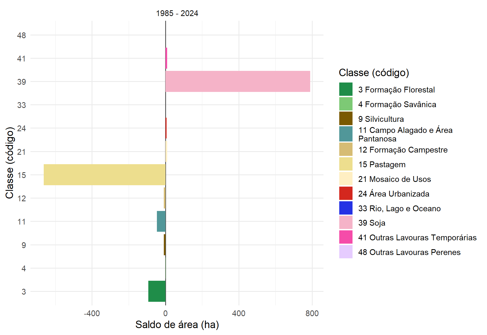
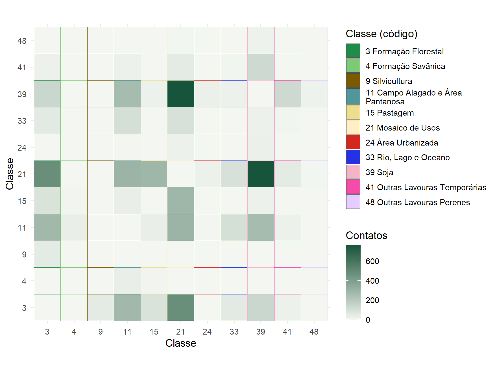
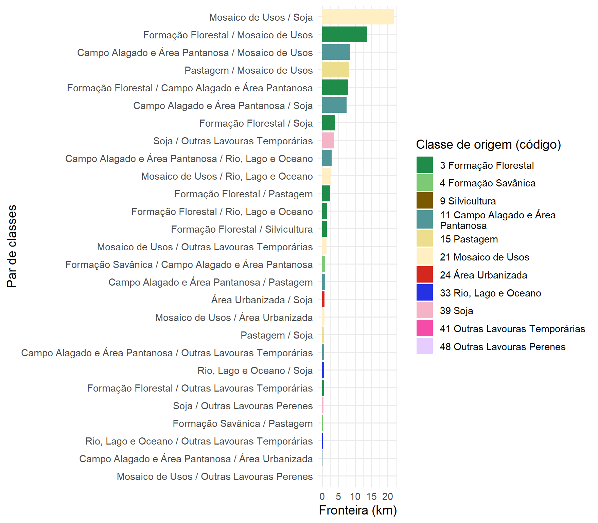

Capítulo 8 Mudanças e adjacências
Transições entre datas
Saber quanto cada classe cresceu ou encolheu não diz para onde a área foi.
land_change() responde a essa pergunta comparando os mapas pixel a pixel, em
duas ou três datas, e quantificando o que permaneceu, o que se converteu e em
quê:
mudancas <- land_change(mapas, years = c(1985, 2024))
mudancas$plot
| Classe | 1985 (ha) | 2024 (ha) | Ganho (ha) | Perda (ha) | Saldo (ha) |
|---|---|---|---|---|---|
| Soja | 0 | 790 | 790 | 0 | 790 |
| Pastagem | 715 | 53 | 12 | 675 | -663 |
| Mosaico de Usos | 136 | 146 | 119 | 109 | 10 |
| Formação Florestal | 200 | 107 | 20 | 113 | -93 |
| Campo Alagado e Área Pantanosa | 146 | 100 | 3 | 49 | -46 |
Entre 1985 e 2024, 78% da área mudou de classe. Quase toda essa mudança é de quantidade (818 ha), isto é, uma classe cresceu ocupando o lugar de outra; apenas 152 ha correspondem a trocas de posição entre classes. A floresta ilustra bem esse quadro: só 44% da formação florestal de 1985 continuava de pé em 2024, e os 20 ha que surgiram em outros pontos não compensaram os 113 ha perdidos.
O saldo de cada classe resume, em um só gráfico, quem ganhou e quem perdeu área no período:
mudancas$change_plot
Com years = c(1985, 2004, 2024), o diagrama ganha uma terceira coluna e cada
pixel passa a ter uma trajetória: estável, mudou uma vez, mudou duas vezes ou
voltou à classe de origem:
mudancas3 <- land_change(mapas, years = c(1985, 2004, 2024))| Trajetória | Área (ha) | Parcela (%) |
|---|---|---|
| Estável | 246,9 | 19,9 |
| Mudou uma vez | 707,6 | 57,0 |
| Voltou à classe de origem | 25,3 | 2,0 |
| Mudou duas vezes | 262,4 | 21,1 |
Adjacências entre classes
land_to_graph() olha para a vizinhança: conta os contatos entre pixels de
classes diferentes e monta a rede da paisagem, em que cada nó é uma classe e a
espessura de cada ligação é o número de contatos entre elas. Com
weight = "boundary", a espessura passa a ser a extensão da fronteira, em
metros.
rede <- land_to_graph(mapas, year = 2024)
rede$plot
Em 2024, a classe mais conectada é campo alagado e área pantanosa, que faz fronteira com 8 classes ao longo de 29,6 km de bordas.
Fronteiras e interfaces
A matriz de adjacências mostra quantos contatos há entre cada par de classes; a
diagonal (contatos de uma classe consigo mesma) fica de fora, a menos que
include_self = TRUE:
rede$heatmap
As interfaces são as fronteiras entre pares de classes, em quilômetros. É nelas que a paisagem muda de uso e onde se concentram os efeitos de borda:
rede$edge_plot
A maior interface, entre mosaico de usos e soja, soma 21,8 km (23% dos contatos entre classes). A floresta faz fronteira com 7 classes, e a principal delas é mosaico de usos.
rede$node_metrics traz, para cada classe, grau (quantas classes vizinhas),
força (quantos contatos), intermediação e entropia da vizinhança, que é alta
quando a classe faz fronteira com muitas outras em proporções parecidas:
| Classe | Grau | Força | Intermediação | Entropia da vizinhança |
|---|---|---|---|---|
| Mosaico de Usos | 8 | 1984 | 23 | 1,57 |
| Soja | 8 | 1368 | 24 | 1,35 |
| Formação Florestal | 7 | 1102 | 9 | 1,53 |
| Campo Alagado e Área Pantanosa | 8 | 1029 | 9 | 1,61 |
| Pastagem | 5 | 434 | 0 | 1,02 |
| Rio, Lago e Oceano | 5 | 276 | 0 | 1,33 |
| Outras Lavouras Temporárias | 5 | 221 | 0 | 1,21 |
| Área Urbanizada | 3 | 54 | 0 | 0,87 |
| Silvicultura | 1 | 50 | 0 | 0,00 |
| Formação Savânica | 2 | 40 | 0 | 0,46 |
| Outras Lavouras Perenes | 2 | 18 | 0 | 0,35 |
rede$graph_metrics resume a rede inteira: densidade (0,49),
transitividade (0,66) e fração dos contatos que ocorrem
entre classes diferentes (11%), um
indicador de quão retalhada está a paisagem.
O grafo também tem uma versão interativa, em que cada classe e cada ligação mostram seus valores ao passar o cursor:
rede$graph_plot